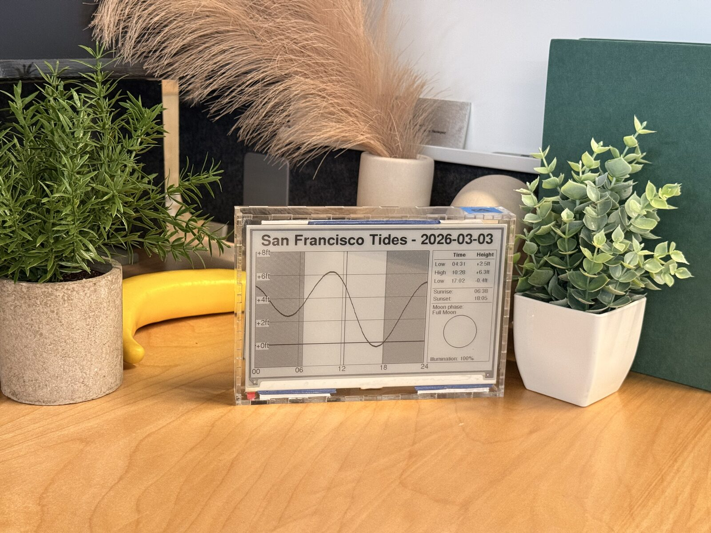
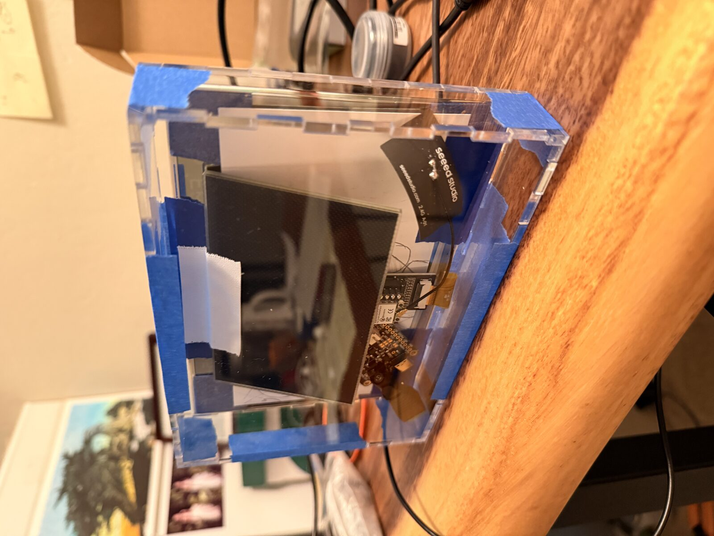

A Solar-Powered Tide Chart
Note: this is a preliminary write up. The device is still headed for the field, and this page will be updated once it is installed.

This is a public device, made for the people of San Francisco to better know the tides. It is a small e-ink screen, powered by the sun, that shows the day's high and low waters, the sunrise and sunset, and the phase of the moon. There is no cord, no cloud, and no app. It sits at the beach and quietly keeps the tide, the way a clock keeps the hour.
The tide is one of the most legible rhythms in nature, and one of the least noticed. It is the overlapping cycle of the sea and the earth and the moon and the sun, written onto the shore twice a day. To know the tide is to know something true about the place you are standing — when the sand will be wide and when the water will come up, when to go out and when to come home. This device is an attempt to make that knowledge easy to share, and to give a public place a small instrument for reading its own natural rhythms.

It is built to look after itself. A small solar panel keeps a battery charged, and the device sleeps through the day, waking once to compute the tides from first principles and redraw the screen. The predictions come from the harmonic constituents of the tide — the separate pulls of the moon and sun, added back together. The whole thing is deliberately simple, so that it can be left alone.
The source code is on GitHub, and it is written to be re-pointed at any coastline. If you would like one for your own stretch of shore, or want to know more, write to info@highdimensionalcoconuts.com.